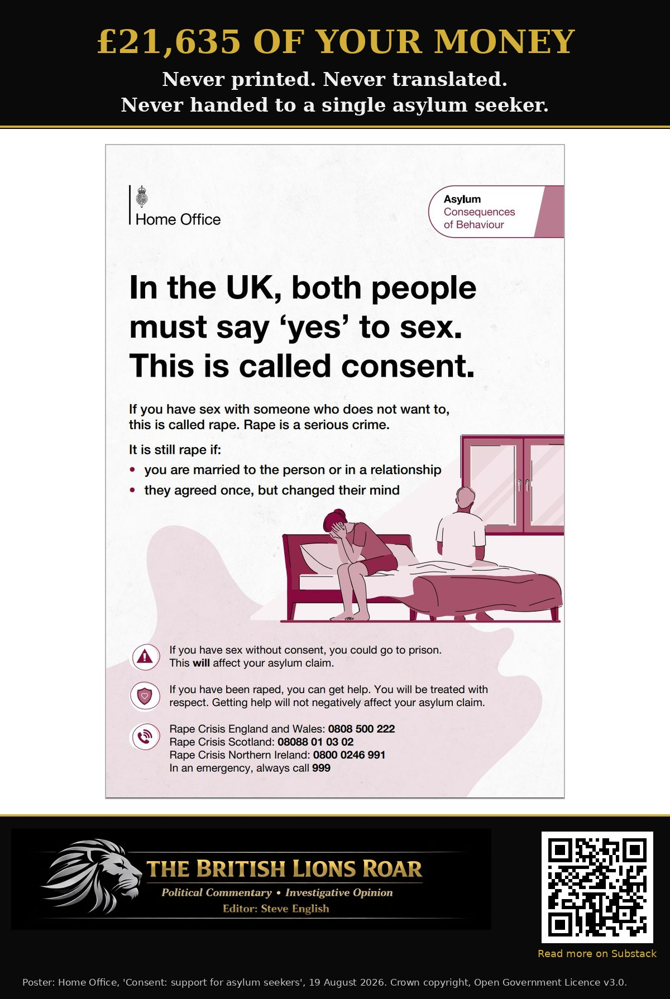

£21,635 for a "Don't Rape" Guide Nobody Got — and the Home Office Can't Tell You What It Spends on Translators
Labour can count every penny of a pamphlet that never left the building. Ask what it spends translating for asylum seekers and suddenly the figures are "not centrally held".

- The Home Office spent £21,635 developing posters and a nine-page guide for asylum seekers, then printed, ordered and distributed none of them
- That works out at £2,403.89 for every page of the booklet
- Nearly three months after publication, the guide exists in one language: English
- The Home Office's asylum support pamphlet, setting out what asylum seekers are entitled to, comes in ten other languages
- Asked what it spends on translation, the Home Office says the figure is "not centrally held"
- Spend on its £19 million translation contract is "commercially sensitive". The Tories awarded it; Labour won't account for it
Labour's Home Office spent £21,635 of your money producing a nine-page guide telling asylum seekers not to rape, not to abuse their partners and not to harm children. Then it handed out precisely none of them.
That isn't my claim. It's the Home Office's. Asked in Parliament how many copies had been distributed and what the thing cost, Home Office minister Anna Turley replied on 22 October:
"No physical materials have been printed, ordered or distributed and therefore no distribution costs have been incurred. The total cost of the development of the posters and the leaflets was £21,635."
We only know this because Conservative MP Dr Neil Shastri-Hurst dragged it out with a written question. GB News had already asked under Freedom of Information. The Home Office blew through the legal deadline and ignored it.
£2,403.89 a page
£21,635. That's what the Home Office paid to develop a set of posters and a nine-page A4 booklet. There was no printing and no translation, because neither happened. Spread across the booklet's nine pages, that's £2,403.89 a page. And for what? Telling grown men that someone who is asleep or too drunk to respond cannot consent to sex. I could produce that booklet with AI in twenty minutes for nothing. So where did the money go?
Not on translation, that's for sure. The guide went up on GOV.UK on 19 August in English. Nearly three months later it is still only in English. No Arabic. No Farsi. No Pashto. Nothing.
That's a guide written for people whose first language, by the Home Office's own records, is overwhelmingly not English. Its own Chief Inspector found that more than four in five asylum applicants on its database had a primary language other than English.
Ten languages for your rights. One for the law.
And don't tell me the Home Office doesn't know how to translate. Its asylum support pamphlet, the one setting out what asylum seekers are entitled to, comes in Albanian, Amharic, Arabic, Chinese, Farsi, Kurdish, Pashto, Punjabi, Tigrinya and Urdu.
So when the Home Office is telling them what they get, it speaks ten languages. When it's telling them what the law expects of them, English will do. And nobody gets a copy anyway.
Ask what it spends on translators
Now try asking what the Home Office spends on translation services (spoken and written). On 2 November, Home Office minister Lord Hanson of Flint was asked in the Lords how much the department spent last year. He gave no figure. The information, he said, is not centrally held and could only be collated and verified at disproportionate cost. He did, however, say the Home Office is exploring AI-enabled translation to improve efficiency. Good. Then perhaps it can explain why a guide it paid £21,635 for still exists in exactly one language.
So ask about the contract instead. The Home Office's translation and interpreting contract with thebigword has a published value of £19 million over three years. Ask what's actually being spent on it each year, and this is the answer Parliament got in February:
"Annual spend and forecast spend are considered commercially sensitive and therefore cannot be disclosed."
Same Uniparty, different rosette
And before the Conservatives climb onto their high horse: Dr Shastri-Hurst says the public are "despairing of this Government's priorities". The £19 million translation contract Labour now refuses to account for was awarded by his own party's Home Office in February 2024. The Tories signed the cheque. Labour hides the receipts. Same Uniparty, different rosette.
So here's the score. Labour put its guide online, never printed a single copy, never translated a word of it, and billed you £21,635 for the privilege. The Tories handed out a £19 million translation contract. Labour pays the bills and won't tell you what they come to.
It can't communicate. It can't count. It won't disclose. And you are paying for all of it.
Want to Dive Deeper? Official sources you can link:
- House of Commons — Written Answers Daily Report, 22 October 2026, question 33707 (Dr Neil Shastri-Hurst; answered by Anna Turley), pp. 98–99: https://britishlionsroar.github.io/Commons-Written-Answers-Daily-Report-2026-10-22.pdf
- GB News — Labour finally reveals full cost of asylum seeker guide after ignoring GB News FOI request: https://www.gbnews.com/politics/migrant-crisis-labour-asylum-seeker-home-office
- Home Office — Understanding behaviours and expectations in the UK: a guide for asylum seekers (published 19 August 2026; English only): https://www.gov.uk/government/publications/understanding-behaviours-and-expectations-in-the-uk-a-guide-for-asylum-seekers
- Home Office — The nine-page A4 guide (PDF): https://assets.publishing.service.gov.uk/media/6a84555dc9205b515d421e22/COB_summary_booklet_FINAL_web.pdf
- Home Office — Consent poster for asylum seekers (PDF, used in our graphic; Crown copyright, Open Government Licence v3.0): https://assets.publishing.service.gov.uk/media/6a7f0a2003b4fe14b1e7deab/COB_A4_Poster_v3_FINAL_web_consent.pdf
- Home Office — Asylum support: UK rights and expectations (ten translations): https://www.gov.uk/government/publications/asylum-support-uk-rights-and-expectations
- Independent Chief Inspector of Borders and Immigration — An inspection of the Home Office's use of language services in the asylum process: https://assets.publishing.service.gov.uk/media/5faa5f95d3bf7f03b249aa57/An_inspection_of_the_Home_Office_s_use_of_language_services_in_the_asylum_process.pdf
- House of Lords — Written question HL4275, answered by Lord Hanson of Flint, 2 November 2026: https://questions-statements.parliament.uk/written-questions/detail/2026-10-19/HL4275
- House of Commons — Written question 108416, answered by Alex Norris, 3 February 2026 ("commercially sensitive"): https://questions-statements.parliament.uk/written-questions/detail/2026-01-26/108416
- Contracts Finder — Language Services: Translation & Interpretation, Home Office, £19,000,000, 29 February 2024 to 28 February 2027: https://www.contractsfinder.service.gov.uk/Notice/8487c43b-bcb1-4491-9c16-295ba8e90d39
 Scan to follow The British Lions Roar on Substack
Scan to follow The British Lions Roar on Substack
Editorial approach: This article is written in plain English, following George Orwell's rule: if you can say something simply, do so. It combines investigative reporting with policy analysis and opinion. Satire is used where appropriate to test ideas by applying them consistently. Facts are sourced; opinions are labelled; institutions are not indulged.
DISCLAIMER: Factual statements in this article are supported by cited sources. Analysis and interpretation are clearly presented as opinion. Nothing published here is intended to incite violence, harassment, or hatred, nor to cause harm. Disagreement with arguments or conclusions does not constitute harm or violence. Where Islamic doctrine or immigration/demographics are discussed, focus is policy and aggregate outcomes — not individuals by race, ethnicity or religion.